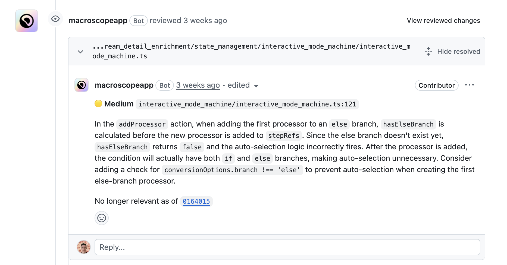
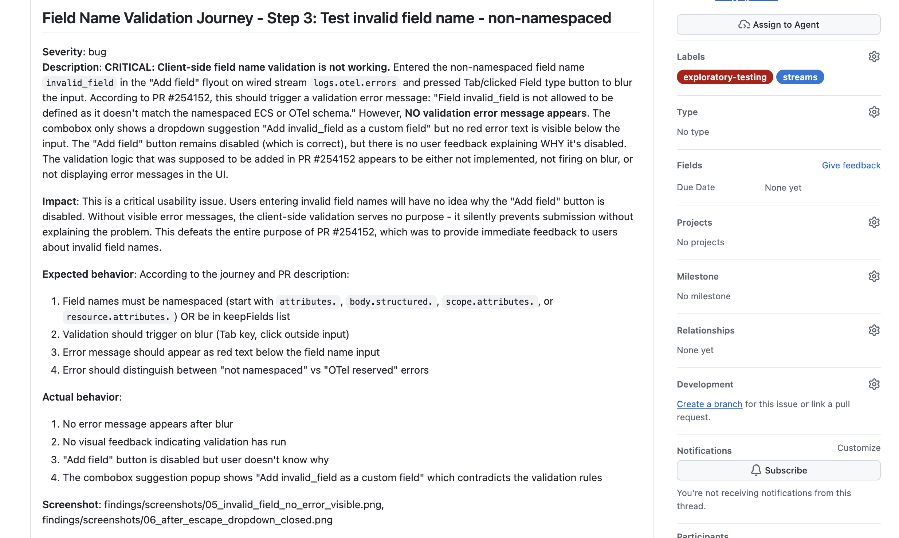

Elastic is the company behind the ELK Stack — Elasticsearch, Logstash, Kibana.
Used by thousands of companies to search, observe, and secure their data at scale. Think full-text search, APM, SIEM, log analytics.
Technology journey
TypeScript · React · Node.js
Frontend in Kibana — my main thing
Java
Elasticsearch core & internals
Go
Data shippers & agents
Foundation — Step 1 of 3
It Started as Next-Token Prediction
The model picks the most likely next token and repeats. Pattern matching over enormous text corpora. One token ≈ ¾ of a word.
Context so far:"The Eiffel Tower is located in "
Model samples the next single token:
"Paris"← 94% "France"← 3% "the"← 1%
Token appended → now predicts the next:"…in Paris_"
","← 61% "."← 22% "and"← 8%
Repeats until end-of-sequence token or max length.
Foundation — Step 2 of 3
Add Thinking: Reason Before Answering
Chain-of-thought prompting (and o1-style reasoning) gives the model space to work through a problem before committing to an answer. This changed things substantially.
Task:"This test fails intermittently. Why?"
<thinking>
The test touches a shared cache...
Two threads could write simultaneously...
Race condition on cache.set() — not thread-safe...
Fix: add a lock, or use an atomic operation.
</thinking>
"The test has a race condition on the shared cache. Add a threading.Lock around cache.set()."
Foundation — Step 3 of 3
Add Tool Calls: Act in the World
The model can pause mid-response, call a tool, and continue from where it left off. Text in, real actions out.
Conceptual flow
Task:"Run tests, fix failures."
→ tool:run_shell("pytest tests/")
FAILED test_user.py::test_login — 401
→ tool:read_file("src/auth.py")
…off-by-one on token expiry seconds…
→ tool:edit_file("src/auth.py", fix)
→ tool:run_shell("pytest tests/")✓
What the model actually emits (Claude / Anthropic format)
// model streams these tokens verbatim
<function_calls>
<invoke name="run_shell">
<parameter name="cmd">pytest tests/</parameter>
</invoke>
</function_calls>
// harness parses, executes, injects result:
<function_results>
FAILED test_user.py — AssertionError: 401
</function_results>
// model continues generating…
Every model has its own token dialect. The harness parses it and runs the real command. The model never executes — it only describes.
Foundation — The Infrastructure
Harness → Provider: The Loop
The harness (pi, Claude Code…) orchestrates a tight request/response loop with the model provider. The model never touches your machine — it only describes what to do.
Model generates tokens— may include a tool call<function_calls>…</function_calls>
↓
3
Harness parses & executes— runs bash, reads file, edits code — on the local machine
↓
4
Tool result sent back— appended to context window at the provider
↓
5
Model continues— uses result to reason, calls more tools or replies
↺
…repeats until task done or human takes over
Part 1 — The New Reality
The Models Finally Got Good
We went from autocomplete to reasoning agents capable of multi-step work. A useful measure: feedback loop length — how long an agent runs before needing your input.
Longer feedback loop = more complex tasks the agent can handle
We went from autocompleting a line to 30-minute unsupervised tasks
Part 1 — The New Reality
Feedback Loop Length Is Everything
METR tracks how long a model can work unsupervised on a research task — doubling roughly every 7 months. (Kwa et al. 2025, metr.org)
Part 2 — The Lifecycle
Planning Before Code
Agree on what to build before any code is written. OpenSpec is a lightweight framework that structures this as a folder of Markdown artifacts. GitHub (41k ⭐) →
The workflow
/opsx:propose dark-mode
→ openspec/changes/dark-mode/
proposal.md ← why & what
specs/ ← requirements
design.md ← approach
tasks.md ← checklist
You review and refine each artifact
with the agent until it's locked.
/opsx:apply→ agent implements all tasks
/opsx:archive→ spec merged into codebase
specs/dark-mode-spec.md
### Requirement: Theme toggle
- SHALL render a toggle in the top-right header
- SHALL apply the new theme within 50ms
- SHALL persist choice to localStorage
#### Scenario: Enable dark mode
- GIVEN the user is on any page
- WHEN they click the dark mode toggle
- THEN the theme switches within 50ms
- AND the preference is saved
#### Scenario: Page reload
- GIVEN dark mode was previously set
- WHEN the page reloads
- THEN dark mode is applied before first render
Part 2 — The Lifecycle
The Bottleneck Moved
Agents cut coding time roughly in half, which surfaced the next constraint. Reviewing and validating is now the slow part.
Ideation & Planning
Coding
Validation & Review
Deploy & Monitor
Triage & Fix
Before agents
~normal
⚠ bottleneck
~normal
~normal
~normal
With agents now
~normal
~2× faster
⚠ bottleneck
~normal
~normal
Agent effectiveness
partial
strong ✓
emerging
early
partial
Part 2 — The Lifecycle
The Validation Bottleneck
Writing code got faster. Reviewing it didn't. The constraint shifted but didn't disappear.
We can produce code faster than we can validate it
Macroscope on every PR — automated sanity checks, style, logic issues
But automated review isn't enough — humans are still the quality gate
The review burden is now the constraint on velocity
Part 2 — The Lifecycle
Macroscope — Example Review
A real Macroscope comment on a PR — logic analysis, not just style.

Part 2 — The Lifecycle
Agentic Exploratory Testing
To speed up validation, we're using agents for exploratory testing — beyond the traditional testing pyramid.
Agent reads the PR diff and documentation
Agent reasons about which UI components are affected
Agent scripts Playwright on the fly to test those paths
Agent "looks" at screenshots to verify behavior
Part 2 — The Lifecycle
Exploratory Testing — Example Output
A GitHub Issue filed autonomously by the exploratory testing agent — with a full reproduction journey.

Part 2 — The Lifecycle
Dev Meets Ops
A production error becomes a GitHub Issue becomes a PR — mostly without a human kicking it off.
1. Discover:ES|QL CATEGORIZE clusters millions of logs → ranked error patterns
Working this way has real downsides worth being honest about.
No more 4-hour deep dives — constant context switching
Pattern: assign Agent A a 30-min task → switch → assign Agent B → review A → correct → loop
More code review, less flow state
Skill atrophy is real — you lose something. The ability to write a module from scratch, the muscle memory of debugging without hints. Leaning on agents too hard and you'll notice the gap when the model is wrong and you can't tell.
As a tech lead, it lets me get closer to the code — but some engineers will struggle with the shift
Part 4 — Downsides
Building the Wrong Things
When building anything takes hours instead of weeks, the cost of a bad idea shrinks — and you build more bad ideas.
Because it's easy to build, we build features that don't solve real problems
AI-written code still needs human-led maintenance — you still own the debt
20% more productivity can mean 40% more technical debt if you're not careful
Code sprawl is real — more surface area for bugs, more to understand